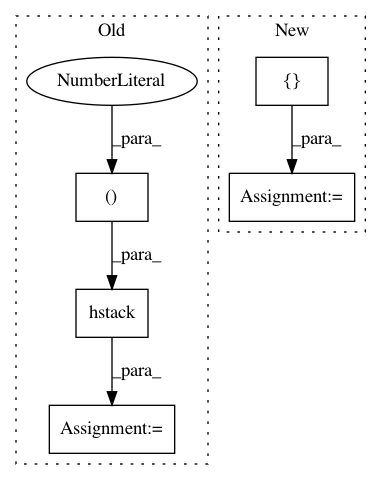

863a9dcee691e850e79d97a16abb977e24324fa1,niftynet/layer/downsample.py,DownSampleLayer,layer_op,#DownSampleLayer#Any#,32
Before Change
spatial_rank = layer_util.infer_spatial_rank(input_tensor)
look_up_operations(self.func, SUPPORTED_OP)
if self.func == "CONSTANT":
kernel_shape = np.hstack((
[self.kernel_size] * spatial_rank, 1, 1)).flatten()
np_kernel = layer_util.trivial_kernel(kernel_shape)
kernel = tf.constant(np_kernel, dtype=tf.float32)
output_tensor = [tf.expand_dims(x, -1)
for x in tf.unstack(input_tensor, axis=-1)]
After Change
stride_all_dims = layer_util.expand_spatial_params(
self.stride, spatial_rank)
if self.func == "CONSTANT":
full_kernel_size = kernel_size_all_dims + [1, 1]
np_kernel = layer_util.trivial_kernel(full_kernel_size)
kernel = tf.constant(np_kernel, dtype=tf.float32)
output_tensor = [tf.expand_dims(x, -1)
for x in tf.unstack(input_tensor, axis=-1)]
In pattern: SUPERPATTERN
Frequency: 3
Non-data size: 5
Instances
Project Name: NifTK/NiftyNet
Commit Name: 863a9dcee691e850e79d97a16abb977e24324fa1
Time: 2017-07-17
Author: wenqi.li@ucl.ac.uk
File Name: niftynet/layer/downsample.py
Class Name: DownSampleLayer
Method Name: layer_op
Project Name: NifTK/NiftyNet
Commit Name: 984d17836d7a6240942cd44f2f61c92a427bb9bb
Time: 2018-04-24
Author: z.eaton-rosen@ucl.ac.uk
File Name: niftynet/layer/crop.py
Class Name: CropLayer
Method Name: layer_op
Project Name: chainer/chainercv
Commit Name: d6c3129f24ea6bea8fa9ab227e399e19fe29cdda
Time: 2017-05-13
Author: yuyuniitani@gmail.com
File Name: chainercv/links/model/faster_rcnn/utils/proposal_creator.py
Class Name: ProposalCreator
Method Name: __call__